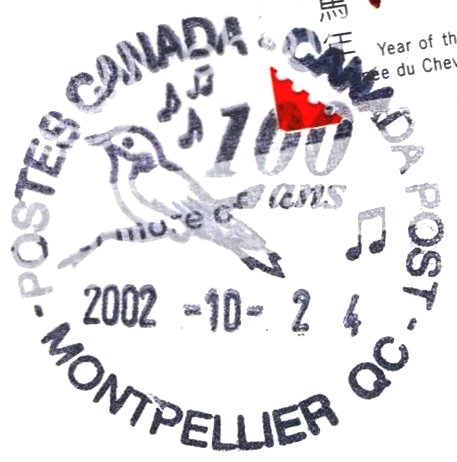

Marché Faubert pictorial cancel
100 ans
- Status
- Expired
- Run dates
- ? to ?
- Design
- "100 ans"; song bird, musical notes
- Ink colour
- Black
- Designer
- Unknown
- Post office
- Marché Faubert
33 Rue Principale
Montpellier, QC
J0V 0A0 - Subjects
- bird, animal, anniversary
This cancel is retired, so the post office can no longer apply it. Covers with it turn up from dealers and other collectors.
 Chertsey CSPSchool logo of Ecole St-Theodore designed by the students
Chertsey CSPSchool logo of Ecole St-Theodore designed by the students BP AnjouCityhall
BP AnjouCityhall